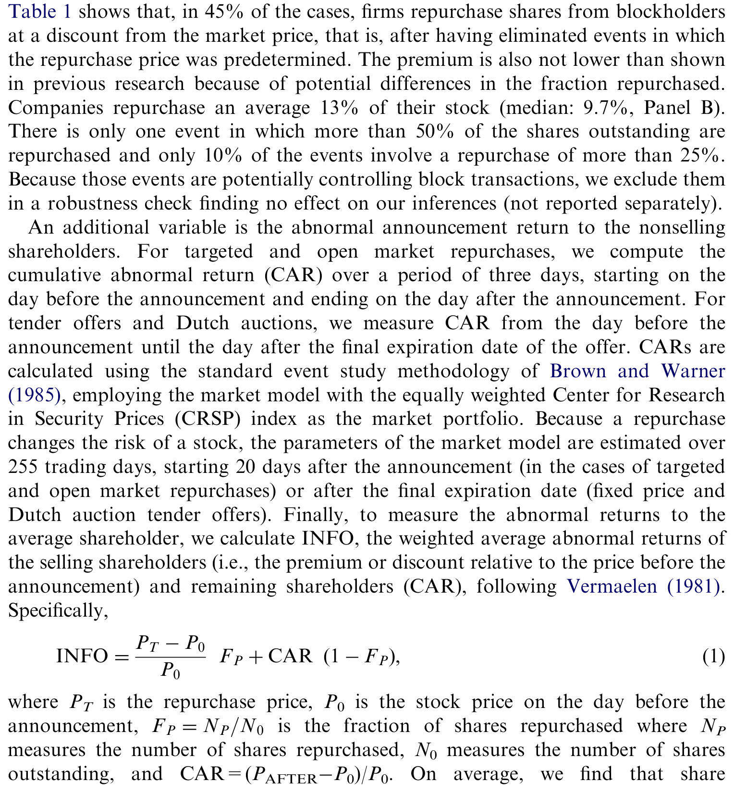
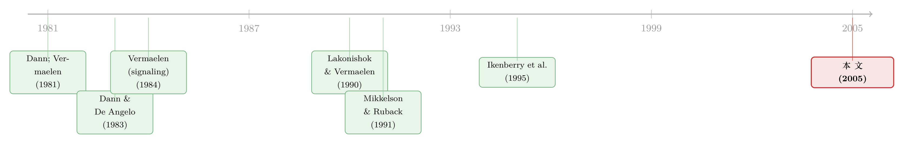

买回自己的股票，凭什么有人赚、有人亏？——私下回购的四张面孔
本文读的是 Peyer & Vermaelen (2005, JFE)：把 1984–2001 年间 737 笔「私下协商回购」翻出来重看，作者发现，过去文献里那个「公司高价买回股票、股价应声下跌」的故事，其实只属于 60 笔「绿讹 (greenmail)」交易；剩下的 677 笔里，有近一半是公司在折价买回，市场反应为正，而且无论溢价还是折价，回购之后一年都跑出了显著的正超额收益。一句话——管理者还是在「股价便宜时」买回自己的股票，只是这件事被一小撮旧样本带偏了二十年。
1 一个被旧样本钉住的结论
先从一个看上去板上钉钉的「常识」说起。
上世纪八十年代，金融学界对私下协商回购（privately negotiated / targeted repurchase，公司不在公开市场、也不通过要约，而是和某个大股东一对一谈好价钱把股票买回来）的判断高度一致：Dann 和 De Angelo (1983)、Bradley 和 Wakeman (1983)、Klein 和 Rosenfeld (1988)、Denis (1990)、Mikkelson 和 Ruback (1991)——这一长串名字，全都报告了显著为负的公告收益，同时公司还付出了不菲的回购溢价 (repurchase premium)。
结论顺理成章：这是绿讹。一个敌意收购者悄悄买进一大块股票，威胁要拿下公司；管理层（往往本身也是大股东）为了保住控制权，宁愿溢价把这块股票买回来送瘟神走，再附上一纸停止协议 (standstill agreement)。管理者明知吃亏，却用公司的钱买自己的「控制权私利」。股价下跌，天经地义。
这个故事讲了二十年，几乎没人质疑。
但 Peyer 和 Vermaelen 盯上了它的三个软肋。首先，过去的样本都太小。接着，一个更要命的问题是——这些数据太老了，大多数事件集中在七十年代末、八十年代初。而那恰恰是美国敌意收购最猖獗的年代（参见 Schwert, 2000）。换句话说，旧样本天然地偏向了那些「为了挡收购」的回购。然后，所有这些研究都默认半强式市场有效，从不看长期表现。
于是一个自然的反问浮出水面：如果换一个样本期，重新数一遍，故事还成立吗？
2 换了样本期，结论就翻了
作者从 SDC 的并购数据库里捞出 1984–2001 年间 737 笔私下回购（剔除了回购价格被预先锁定的合成回购、按均价回购等情形），同时收集了 6,470 笔公开市场回购、303 笔固定价格要约、251 笔荷兰式拍卖作为对照。
结果相当刺眼。
整个私下回购样本里，公司相对于公告前两天股价支付的平均溢价只有 1.92%，中位数恰好是零。这和固定价格要约的 20.74%、荷兰式拍卖的 14.72% 形成鲜明对比，更和旧文献里动辄两位数的溢价南辕北辙。更反直觉的是：有 44.78% 的交易，公司是在折价回购——也就是说，公司用低于市价的价钱，从大股东手里把股票买了回来。
公告收益也跟着翻了个面。三日窗口的累计异常收益 (cumulative abnormal return, CAR[−1,1]) 不再是负的，而是显著为正的 1.81%（t 值在 1% 水平上显著）。
如表 1 所示，无论用哪种方式回购，平均而言股东财富都在增加——私下回购的 INFO 指标虽然最小（2.12%），但已经是显著为正，而非旧文献里的负数。

Table 1: shows that, in 45% of the cases, firms repurchase shares from blockholders
那旧的负收益故事去哪了？答案藏在样本的角落里。SDC 把其中 60 笔明确标记为「绿讹/防御性交易」。单独把这 60 笔拎出来看，旧结论原封不动地回来了：平均回购溢价 18.06%，三日 CAR 为显著负的 −2.57%。而且这 60 笔里有 54 笔发生在 1980 年代。
这就是全文的第一个支点：过去二十年的「私下回购 = 绿讹 = 亏钱」，本质上是用一个被绿讹主导的旧样本，以偏概全。 把绿讹单拎出去，剩下的私下回购完全是另一种生物。
3 把 737 笔拆成四张面孔
光说「翻案」还不够。作者真正聪明的一步，是把 737 笔按支付的价格切成四组，让每一组讲自己的故事：
- 绿讹组：60 笔，SDC 标记为防御性交易；
- 溢价组：238 笔，付了正溢价但不是绿讹；
- 零溢价组：109 笔，溢价恰好为零；
- 折价组：330 笔，最大的一组，折价回购。
这一刀切下去，四组的性质立刻分化（见 Table 2 的单变量统计）：溢价组溢价 18.93%、CAR 2.50%；零溢价组溢价 0、CAR 2.14%；折价组溢价 −12.64%、CAR 1.99%；绿讹组溢价 18.06%、CAR −2.57%。
但真正关键的一步在于：公告期的 CAR 会被一个会计效应污染——回购本身就在卖方和留守股东之间转移财富。要看清「这笔交易到底给留守股东创造了多少价值」，得把财富转移先扣掉。作者沿用 Vermaelen (1981) 的做法，构造了一个加权平均的异常收益指标 INFO：它把卖方拿到的溢价（或折价）和留守股东的 CAR 按持股比例加权平均。
这个看似不起眼的会计恒等式，是理解全文的钥匙。把它写清楚：
其中 \(P_T\) 是回购价格，\(P_0\) 是公告前一天的股价，\(F_P = N_P / N_0\) 是回购股份占总股本的比例，\(\mathit{CAR} = (P_{\mathit{AFTER}} - P_0)/P_0\)。
直觉很干净：CAR 只反映留守股东的得失，但卖方手里那笔溢价/折价也是真金白银的财富变动。INFO 把两边按人头加权加起来，衡量的是「平均一个股东」的财富变化。
用这把尺子一量，四组的故事就分开了：
- 溢价组 INFO
4.77%，是唯一在经济意义上显著创造了价值的一组； - 零溢价组 INFO
1.92%，但作者发现这一组的卖方多半是内部人（现任、退休、离职的高管员工——能识别卖方的样本里占55%），公司只是替他们提供了一个比公开市场更方便的退出通道，谈不上创造价值； - 折价组 INFO
0.29%，不显著——市场在公告日几乎不把折价回购当成利好信号； - 绿讹组 INFO
1.98%，仅在 10% 水平上勉强显著。
到这里，论文的核心命题已经清晰：溢价回购像「信号」，折价回购像「讨价还价」，零溢价回购像「内部人退出」，而绿讹是它们各自的极端。 同一个「私下回购」的标签，底下其实站着四种完全不同的经济动机。
4 折价从哪来？一场讨价还价
折价组是最大的一块（330 笔），也最耐人寻味——公司怎么能用低于市价的价钱买回自己的股票？卖方又不傻，凭什么折价卖？
作者的回答是：这是一场讨价还价 (bargaining)，折价的深浅，取决于买卖双方的相对谈判力。他们把折价对一组代理「谈判力」的变量做回归，结论与直觉一致——当满足以下条件时，公司能压出更深的折价：
- 股票相对不流动（卖方在公开市场难以脱手，只能找公司接盘）；
- 公司有较大的成长机会（手里的现金有更好的去处，不愿高价买股）；
- 公司更受融资约束；
- 管理者持股更多（是在用自己的钱买，更有动力砍价）。
为了把谈判的动态看得更透，作者还盯住了 57 笔卖方本身也是上市公司的特殊样本——这下买卖双方的财务状况都能观测了。结果完全符合一个讨价还价的图景：双方的财务健康、对资金的需求或可得性，共同决定了各自的谈判筹码。当回购方成长机会高、又能拿到「跳楼价」时，它才肯只投资自己；而卖方在面临更高的财务困境概率时，会像「火线甩卖 (fire sale)」一样愿意折价出手。
这条「谁更缺钱、谁更没退路，谁就让价」的逻辑，和公司债大宗交易里「接盘人」的故事是相通的——价格里那道折扣，量的往往是「找不到买家」的时间。可参见《谁来接住这一大笔债券？》与《价格里那道折扣，量的是「找不到买家」的时间》。
5 溢价为何换来正收益？信号与谈判的合奏
折价是讨价还价，那溢价呢？公司多付了钱，股价反而涨，这才是真正需要解释的反常。
作者搬出了 Vermaelen (1984) 在公开要约回购情境下提出的信号模型 (signaling model) 的同款逻辑：管理者愿意付溢价回购，是在向市场释放「我认为股票被低估了」的可信信号——因为如果股票其实高估，溢价回购就是在烧自己的钱，只有真信被低估的管理者才付得起这个代价。
模型给出三个可检验的预测：公告收益应当正向取决于（1）回购溢价、（2）回购股份占比、（3）内部人持股比例。数据全部对上了号——这与 Vermaelen (1981, 1984) 在要约回购上的发现一脉相承。
但真正关键的一步在于，作者没有就此打住。他们发现，单靠这三个信号变量，对溢价的解释力和系数量级都不够漂亮。于是反转出现：一旦把代表「谈判力」的变量也加进去，对回购溢价的解释力显著提升。换句话说，溢价不是纯粹的信号，它同时是买卖双方讨价还价的产物。 信号模型和谈判模型，在这里不是二选一，而是合奏。
6 长期收益：绿讹反而是最大的赢家
如果故事停在公告日，它只是一篇「重做事件研究、推翻旧结论」的论文。让它真正立住的，是长期收益那一节——也是旧文献整体缺席的地方。
作者用 Ibbotson (1975) 的 RATS（return across time and security）方法，叠加 Fama 和 French (1993) 的三因子模型，去算回购之后的长期超额收益。结果：回购公司在公告后 12 个月里，跑出了显著为正的 6.74% 超额收益。
最惊人的反转在绿讹组。这一组在公告日跌得最惨（CAR −2.57%），可在随后的 17 个月里却跑赢基准 16%——而这恰恰和它们付出的平均绿讹溢价（18%）量级相当！
这意味着什么？意味着那个流传最广的判断——「管理者为了赶走敌意收购者，不惜高价买回股票、白白让股东受损」——是错的。真实的图景是：管理者之所以从敌意买家手里买回股票，恰恰是因为他们相信股票被低估了。绿讹溢价看似「亏」在公告日，长期看却被低估的价值修复给补了回来。市场在公告时误读了它，只有在长跑里才回过味来。
非绿讹的溢价组和折价组，公告后一年也都伴随正的异常收益。于是作者得出一个统一的结论：私下溢价/折价回购，和公开市场回购、要约回购在本质上是一样的——公司在自认股价低估时买回股票，而市场对回购公告反应不足 (underreaction)。 有意思的是，市场在公告当下根本不把折价回购当作低估信号，只有在长期里才慢慢意识到公司的价值。
唯一的例外是零溢价组：它没有显著的长期超额收益。但这不奇怪——这一组的卖方主要是内部人（多为现任、即将退休或已退休的员工），公司只是替他们提供退出通道，谈不上「替留守股东抄底」。只有当公司从外部人手里买股票时，它才会替长期股东尽力争取一笔好交易。
7 文献脉络
把这条线索捋一捋，会看到一段很清晰的演进。
起点是回购的「好消息」叙事：Dann (1981) 和 Vermaelen (1981) 发现公开市场回购、要约回购伴随正的公告收益，并由 Vermaelen (1981, 1984) 提炼出信号假说——回购是管理者传递「股价低估」的可信信号。
但私下回购是个例外。Dann 和 De Angelo (1983)、Bradley 和 Wakeman (1983)、Klein 和 Rosenfeld (1988)、Denis (1990)、Mikkelson 和 Ruback (1985, 1991) 接连报告私下回购的负公告收益与高溢价，把它解读为绿讹与防御性交易。这条「私下回购 = 亏钱」的支线，统治了二十年。
与此同时，另一条长期收益的暗线在生长：Lakonishok 和 Vermaelen (1990) 发现要约回购后的价格异常，Ikenberry、Lakonishok 和 Vermaelen (1995)、Mitchell 和 Stafford (2000) 发现公开市场回购后数年的显著正超额收益，指向市场对回购信息的反应不足。

Peyer 和 Vermaelen (2005) 站在这两条线的交汇处：用一个更新、更大、绿讹占比更低的样本，把私下回购从「绿讹」的单一叙事里解放出来，再用长期收益把它和公开市场回购的「低估—反应不足」逻辑重新接上。它既是对 1980 年代旧结论的修正，也是信号假说在私下回购情境下的一次延伸。
8 评论与延伸（Q&A + 研究方向）
(a) 几个可能的疑问
Q：结论翻盘，到底是因为「样本期变了」，还是因为「方法变了」？
主要是样本期。作者用的还是 Brown 和 Warner (1985) 的标准事件研究法。真正变的是构成：旧研究的事件集中在敌意收购猖獗的 1970s–80s，绿讹占比高；本文 1984–2001 的样本里，绿讹只剩 60 笔且 54 笔在 1980 年代，1989 年后几乎绝迹（七个州的反绿讹法 + 1987 年 50% 的绿讹消费税）。把绿讹剔掉，故事自然就正了。
Q：折价回购，会不会只是「测量误差」——公告前股价被推高了，于是显得折价？
这是个真问题。作者用的是公告前两天的收盘价作基准，部分缓解了公告日抢跑的污染；而且折价的横截面变化能被流动性、成长机会、融资约束、管理者持股这些谈判力变量系统地解释，不像纯噪声。但严格说，基准价的选择仍是这类研究的软肋。
Q：绿讹组「公告跌、长期涨」，会不会只是 60 个样本的统计偶然？
60 笔确实小，17 个月跑赢 16% 的估计噪声不会小。这是全文最该打折扣的发现——它足以质疑「管理者高价送瘟神、白白让股东受损」的旧叙事，但要把「管理者其实在抄底」坐实，样本量撑不起强结论。作者的措辞也相对克制。
Q：INFO 和 CAR 到底差在哪，为什么非用 INFO 不可？
CAR 只看留守股东。但回购会在卖方和留守股东之间转移财富：折价回购是卖方补贴留守股东，溢价回购反过来。只看 CAR 会把这部分转移误判成「价值创造/毁灭」。INFO 按持股比例把两边加权平均，衡量的是「平均一个股东」的财富变化，才能干净地比较四组。
Q：信号模型和谈判模型不是互相矛盾吗？怎么能同时成立？
不矛盾。信号决定了管理者愿不愿意付溢价（只有真信低估的才付得起），谈判决定了最终付多少。作者的发现正是：信号变量解释了溢价的方向，但加入谈判力变量后解释力才显著提升——两者是互补的两层。
Q：这对「回购是好是坏」的政策争论意味着什么？
意味着不能用一个标签一刀切。私下回购里，溢价交易创造价值、折价交易转移价值、零溢价多是内部人退出、绿讹是历史遗留。监管若想防的是绿讹（管理者用公司钱保位子），那 1980s 末的反绿讹法配合 50% 消费税，效果是把潜在袭击者「劝退」在买入第一块股票之前——这本身就是个干净的政策实验。
(b) 几个可能的研究问题与提案
1. 把这套「四张面孔」搬到公司债的私下回购/要约回购上。 【经济故事】公司也会私下回购自己的债券，尤其在信用利差走阔、债券折价交易时。折价回购债券是不是同样的「讨价还价 + 流动性」逻辑？溢价回购是不是信号？ 【可行性】中。需要 Mergent FISD + TRACE 识别债券回购事件与成交价，难点是私下债券回购的公告往往不透明、样本稀疏，识别卖方身份比股票更难。
2. 外资大股东作为卖方，折价更深还是更浅？ 【经济故事】本文的折价由「卖方退路」决定。外资机构（尤其面临赎回压力或本国资本管制）可能更缺退路，被压出更深折价；也可能因信息劣势反被占便宜。 【可行性】中。需要 13F / Thomson 持股数据匹配卖方身份 + 私下回购事件。识别上可用本国冲击（如母国危机）作为外资「被迫卖出」的外生变动，接近火线甩卖设计。
3. 流动性作为折价的定价因子：把 INFO 拆成「信号」与「流动性折价」两块。 【经济故事】折价组 INFO 不显著，但长期收益为正——市场没有即时为低估定价。能否构造一个直接的股票流动性度量（Amihud、零收益天数），看折价深度中有多少是纯流动性补偿、多少是讨价还价租金？ 【可行性】高。CRSP 日数据即可构造流动性指标，回归框架现成，是对本文谈判力回归的直接细化。
4. 反绿讹立法作为准自然实验，识别「控制权私利」的价值。 【经济故事】七个州在 1980s 末先后立法、1987 年联邦加征 50% 绿讹税。利用各州立法时点的交错差异，做交错双重差分，看绿讹回购的频率与溢价如何反应，反推「买回控制权」对管理者值多少。 【可行性】中高。立法时点可考（Danielson & Karpoff, 1998 给了 1983–1989 的数据），但需当心交错 DiD 在异质性处理效应下的偏误。关于后者，可参见《当「更稳健」的设计悄悄把符号弄反了——重读交错双重差分》。
上面几条里，「外资作为卖方」和「债券私下回购」最有意思，但也最受数据所限——私下交易的对手方身份在公开数据里常常缺失，识别 doable 与否，八成卡在这一步。
我的判断
这篇论文的贡献，不在于发明了什么新方法，而在于一次漂亮的「祛魅」：它用一个更干净的样本，把笼罩私下回购二十年的「绿讹」迷雾拨开，证明所谓的「管理者高价回购、毁损股东价值」其实是旧样本的选择性偏误。把 737 笔按价格拆成四张面孔，再用 INFO 把财富转移从价值创造里剥离出来——这套拆解本身就值得学。它最终把私下回购重新接回了「低估—信号—反应不足」这条回购研究的主干。
对识别的担忧有两处。其一，长期收益依赖 Fama-French 三因子基准，而 Fama (1998) 早就提醒过，长期异常收益对模型设定和方法（等权/价值加权、CAR/BHAR）极其敏感——绿讹组「跑赢 16%」尤其建立在 60 个样本之上，噪声不容小觑。其二，折价的因果解读仍偏「相关」：流动性、成长机会、管理者持股之间互相纠缠，谈判力的故事讲得通，但很难说哪一个是真正的外生推手。
后续我最想看到的，是把卖方身份这一维度做实——本文已经隐约触到「卖方是不是内部人/上市公司」会改变故事，但受限于数据只能浅尝。如果能在债券市场或外资持有人的情境里，拿到更清晰的对手方信息，把「谁在卖、为什么卖」量化出来，这条「讨价还价决定折价」的暗线，才能真正从相关走向因果。
参考文献
Bradley, M., Wakeman, L. (1983). The wealth effects of targeted share repurchases. Journal of Financial Economics 11, 301–328.
Brown, S., Warner, J. (1985). Using daily stock returns. Journal of Financial Economics 14, 3–31.
Dann, L. (1981). Common stock repurchases: an analysis of returns to bondholders and stockholders. Journal of Financial Economics 9, 113–138.
Dann, L., De Angelo, H. (1983). Standstill agreements, privately negotiated stock repurchases, and the market for corporate control. Journal of Financial Economics 11, 275–300.
Danielson, M., Karpoff, J. M. (1998). On the uses of corporate governance provisions. Journal of Corporate Finance 4, 347–371.
Denis, D. (1990). Defensive changes in corporate payout policy: share repurchases and special dividends. Journal of Finance 45, 1433–1456.
Fama, E. (1998). Market efficiency, long-term returns, and behavioral finance. Journal of Financial Economics 49, 283–306.
Fama, E., French, K. (1993). Common risk factors in the returns on stocks and bonds. Journal of Financial Economics 43, 3–56.
Ibbotson, R. (1975). Price performance of common stock new issues. Journal of Financial Economics 2, 235–272.
Ikenberry, D., Lakonishok, J., Vermaelen, T. (1995). Market underreaction to open market share repurchases. Journal of Financial Economics 39, 181–208.
Klein, A., Rosenfeld, J. (1988). The impact of targeted share repurchases on the wealth of non-participating shareholders. Journal of Financial Research 11, 89–97.
Lakonishok, J., Vermaelen, T. (1990). Anomalous price behavior around repurchase tender offers. Journal of Finance 45, 455–477.
Mikkelson, W., Ruback, R. (1985). An empirical analysis of the interfirm equity investment process. Journal of Financial Economics 14, 523–553.
Mikkelson, W., Ruback, R. (1991). Targeted repurchases and common stock returns. RAND Journal of Economics 22, 544–561.
Mitchell, M., Stafford, E. (2000). Managerial decisions and long-term stock price performance. Journal of Business 73, 287–329.
Peyer, U. C., Vermaelen, T. (2005). The many facets of privately negotiated stock repurchases. Journal of Financial Economics 75(2), 361–395.
Schwert, G. W. (2000). Hostility in takeovers: in the eyes of the beholder? Journal of Finance 55, 2599–2640.
Vermaelen, T. (1981). Common stock repurchases and market signaling. Journal of Financial Economics 9, 139–183.
Vermaelen, T. (1984). Repurchase tender offers, signaling, and managerial incentives. Journal of Financial and Quantitative Analysis 19, 163–181.